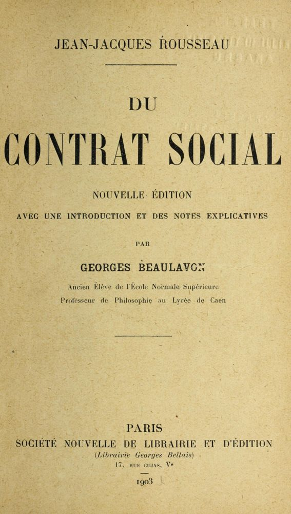
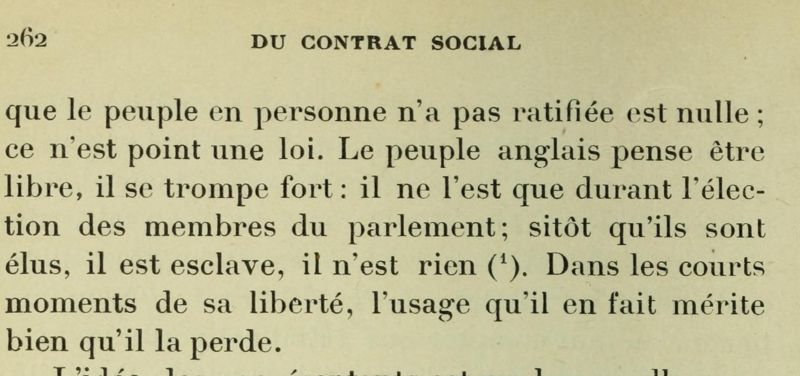

The two intolerances (pp. 331–333)
French: pp. 331–333, scan. Highlighted: Lecky’s words. The elided text is shown in grey.

Those who distinguish civil intolerance from theological intolerance are mistaken, in my opinion. These two intolerances are inseparable. It is impossible to live in peace with people whom one believes damned; to love them would be to hate God, who punishes them; it is absolutely necessary that they be brought back or tormented. Wherever theological intolerance is admitted, it is impossible that it should not have some civil effect; and as soon as it has, the sovereign is no longer sovereign, even in temporal matters: from then on the priests are the true masters; kings are only their officers.
Now that there is no longer, and can no longer be, an exclusive national religion, all those that tolerate others must be tolerated, so far as their dogmas contain nothing contrary to the duties of the citizen. But whoever dares to say: outside the Church no salvation ought to be driven from the State, unless the State is the Church and the prince the pontiff. Such a dogma is good only in a theocratic government; in any other it is pernicious. …
Original French
Ceux qui distinguent l’intolérance civile et l’intolérance théologique se trompent, à mon avis. Ces deux intolérances sont inséparables. Il est impossible de vivre en paix avec des gens qu’on croit damnés ; les aimer serait haïr Dieu qui les punit ; il faut absolument qu’on les ramène ou qu’on les tourmente. Partout où l’intolérance théologique est admise, il est impossible qu’elle n’ait pas quelque effet civil ; et sitôt qu’elle en a, le souverain n’est plus souverain, même au temporel : dès lors les prêtres sont les vrais maîtres ; les rois ne sont que leurs officiers.
Maintenant qu’il n’y a plus et qu’il ne peut plus y avoir de religion nationale exclusive, on doit tolérer toutes celles qui tolèrent les autres, autant que leurs dogmes n’ont rien de contraire aux devoirs du citoyen. Mais quiconque ose dire : hors de l’Église point de salut, doit être chassé de l’État, à moins que l’État ne soit l’Église, et que le prince ne soit le pontife. Un tel dogme n’est bon que dans un gouvernement théocratique ; dans tout autre il est pernicieux. …
| Lecky, 1865 (note 81) | This edition, 1903 | |
|---|---|---|
| Orthography | seroit … haïr | serait … haïr |
| Punctuation | se trompent à mon avis. Ces deux intolérances sont inséparables. | se trompent, à mon avis. Ces deux intolérances sont inséparables. |
| Cut | “… qu’on les tourmente. … On doit tolérer…” | the middle (grey above) and “Maintenant qu’il n’y a plus … exclusive,” are omitted |
| Toleration | On doit tolérer tous les religions qui tolèrent les autres, autant que leur dogmes | on doit tolérer toutes celles qui tolèrent les autres, autant que leurs dogmes |
| Salvation | hors de l’Église point de salut | hors de l’Église point de salut (italic) |
The differences are probably the edition he used, not slips of Lecky’s; I have not seen it. The omission matters a little: Rousseau’s “Maintenant qu’il n’y a plus … de religion nationale exclusive” is what makes his toleration a modern rule, which Lecky’s run-on version blurs. Lecky’s rendering of the whole as a defence of toleration with one exception is nonetheless fair.
Editor’s notes on this page
Lecky quotes Rousseau’s argument that civil and theological intolerance cannot be separated, and his conclusion that those who say “outside the Church, no salvation” must be driven from the state unless the state is the Church. The quotation is accurate to the sense. Lecky leaves out the middle of the passage (on priests becoming the true masters), and his French has a few differences: older spelling and, in two places, a grammatical slip that may be his edition’s (“tous les religions … leur dogmes”).
“The English people thinks it is free” (Book III, ch. 15)
French: 1903 edition, p. 262, scan n265, in the chapter on deputies or representatives. Highlighted: the contention Lecky’s note paraphrases.

[The people’s deputies, then, are not and cannot be its representatives; they are only its agents; they can conclude nothing definitively. Every law] that the people has not ratified in person is null; it is not a law. The English people thinks it is free; it is greatly mistaken: it is free only during the election of members of parliament; as soon as they are elected, it is a slave, it is nothing. In the brief moments of its liberty, the use it makes of it well deserves that it should lose it.
Translation: this edition’s draft. The bracketed opening is from p. 261, read in the OCR only.
Original French
[Les députés du peuple ne sont donc ni ne peuvent être ses représentants, ils ne sont que ses commissaires; ils ne peuvent rien conclure définitivement. Toute loi] que le peuple en personne n’a pas ratifiée est nulle; ce n’est point une loi. Le peuple anglais pense être libre, il se trompe fort: il ne l’est que durant l’élection des membres du parlement; sitôt qu’ils sont élus, il est esclave, il n’est rien. Dans les courts moments de sa liberté, l’usage qu’il en fait mérite bien qu’il la perde.
Lecky (vol. II, ch. V, text at note 140) says the doctrines of the Social Contract are borrowed from Locke and Sydney, “and where they diverge from their models they fall speedily into absurdity”; his example: “when it is contended that a people with representative government are slaves, except during the period of the elections.” The 1903 editor’s footnote to “il n’est rien” remarks that Rousseau would evidently pass the same judgement on the French constitution of 1903.
Further down the rabbit hole
Sources that Lecky cites in the notes next to the ones that cite this page.
- Bayle, Commentaire philosophiqueBayle answers the Mosaic law objection to toleration
- Lamennais, Affaires de RomeLacordaire’s memorial to the Pope: why the Church in France needed liberty, not privilege
- Vitet, Études sur l’histoire de l’artWhy the saints in Rome’s mosaics grew ugly: Lecky blames the monks, his source blames the barbarians
- Fusil, Souvenirs d’une actriceWho took the powdered wigs off Greek heroes? An actress remembers a singer
- Milton, AreopagiticaTruth torn to pieces like Osiris, and why the search must not be licensed
- Chillingworth, The Religion of ProtestantsWhy an honest error needs no pardon


Backlinks
Every place in Rationalism in Europe that links to this page (generated automatically when the site is built).